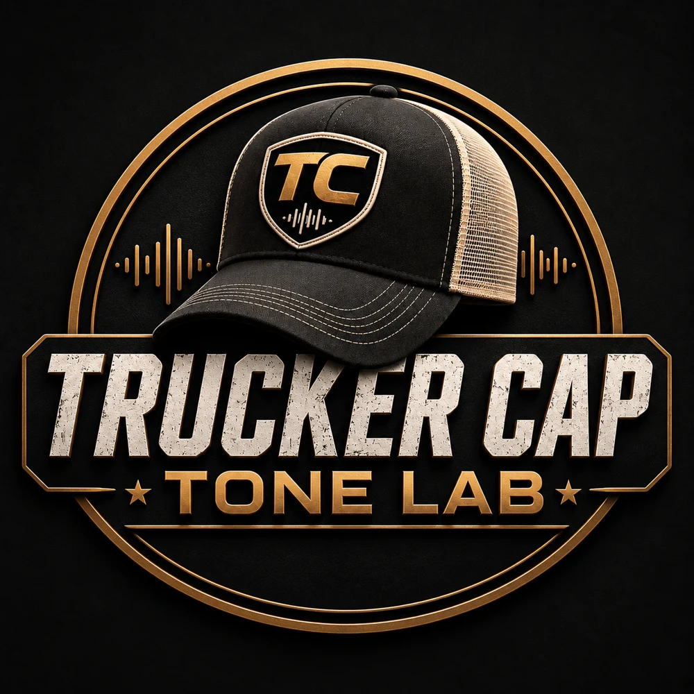

Trucker Cap Tone Lab
Guitarra Fora da Caixa
Guia de timbres
Encontre um caminho para o seu som.
Escolha sua pedaleira, um estilo e um guitarrista. Monte a cadeia e ajuste pelo ouvido.
1 · Pedaleira
2 · Estilo
3 · Guitarrista
4 · Configuração